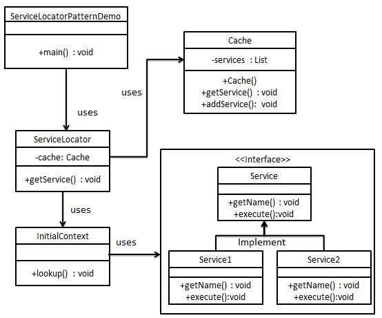

Android Architecture Component
<?xml version=”1.0” encoding=”UTF-8” standalone=”no”?>
<!DOCTYPE html PUBLIC “-//W3C//DTD XHTML 1.0 Transitional//EN” “http://www.w3.org/TR/xhtml1/DTD/xhtml1-transitional.dtd">
Android Architecture Components 安卓架构组件库
项目依赖结构 :
}
dependencies {
// For Lifecycles, LiveData, and ViewModel, add:
compile “android.arch.lifecycle:runtime:1.0.0-alpha3”
compile “android.arch.lifecycle:extensions:1.0.0-alpha3”
annotationProcessor “android.arch.lifecycle:compiler:1.0.0-alpha3”
// For Room, add:
compile “android.arch.persistence.room:runtime:1.0.0-alpha3”
annotationProcessor “android.arch.persistence.room:compiler:1.0.0-alpha3”
// For testing Room migrations, add:
testCompile “android.arch.persistence.room:testing:1.0.0-alpha3”
// For Room RxJava support, add:
compile “android.arch.persistence.room:rxjava2:1.0.0-alpha3”
}
compile “android.arch.lifecycle:runtime:1.0.0-alpha3”
compile “android.arch.lifecycle:extensions:1.0.0-alpha3”
annotationProcessor “android.arch.lifecycle:compiler:1.0.0-alpha3”
// For Room, add:
compile “android.arch.persistence.room:runtime:1.0.0-alpha3”
annotationProcessor “android.arch.persistence.room:compiler:1.0.0-alpha3”
// For testing Room migrations, add:
testCompile “android.arch.persistence.room:testing:1.0.0-alpha3”
// For Room RxJava support, add:
compile “android.arch.persistence.room:rxjava2:1.0.0-alpha3”
}
架构原则：
1、不要在应用程序组件中保存任何应用数据或状态，并且组件间也不应该相互依赖
The most important thing you should focus on is the separation of concerns in your app. It is a common mistake to write all your code in an
[Activity](https://developer.android.com/reference/android/app/Activity.html)or a [Fragment](https://developer.android.com/reference/android/app/Fragment.html). Any code that does not handle a UI or operating system interaction should not be in these classes. Keeping them as lean as possible will allow you to avoid many lifecycle related problems. Don’t forget that you don’t own those classes, they are just glue classes that embody the contract between the OS and your app. The Android OS may destroy them at any time based on user interactions or other factors like low memory. It is best to minimize your dependency on them to provide a solid user experience.2、通过 model 驱动应用 UI，并尽可能的持久化
The second important principle is that you should drive your UI from a model, preferably a persistent model. Persistence is ideal for two reasons: your users won’t lose data if OS destroys your app to free up resources and your app will continue to work even when a network connection is flaky or not connected. Models are components that are responsible for handling the data for the app. They are independent from the Views and app components in your app, hence they are isolated from the lifecycle issues of those components. Keeping UI code simple and free of app logic makes it easier to manage. Basing your app on model classes with well-defined responsibility of managing the data will make them testable and your app consistent.
一般可以把app业务功能开发分成三部分：activity/fragment(UI)、data(ViewModel)、layout.xml
这里的ViewModel是什么？
A ViewModel provides the data for a specific UI component, such as a fragment or activity, and handles the communication with the business part of data handling, such as calling other components to load the data or forwarding user modifications. The ViewModel does not know about the View and is not affected by configuration changes such as recreating an activity due to rotation.简单来说就是给UI提供数据的，并且不能让ViewModel知道UI的存在，否则就会犯错。
然后这里Architecture Component是怎么处理这个事情的呢？
<span style="color: rgb(0, 0, 136);">public</span><span style="color: rgb(0, 0, 0);" /><span style="color: rgb(0, 0, 136);">class</span><span style="color: rgb(0, 0, 0);" /><span style="color: rgb(102, 0, 102);">UserProfileFragment</span><span style="color: rgb(0, 0, 0);" /><span style="color: rgb(0, 0, 136);">extends</span><span style="color: rgb(0, 0, 0);" /><span style="color: rgb(102, 0, 102);">LifecycleFragment</span><span style="color: rgb(0, 0, 0);" /><span style="color: rgb(102, 102, 0);">{</span><span style="color: rgb(0, 0, 0);"> </span><span style="color: rgb(0, 0, 136);">private</span><span style="color: rgb(0, 0, 0);" /><span style="color: rgb(0, 0, 136);">static</span><span style="color: rgb(0, 0, 0);" /><span style="color: rgb(0, 0, 136);">final</span><span style="color: rgb(0, 0, 0);" /><span style="color: rgb(102, 0, 102);">String</span><span style="color: rgb(0, 0, 0);"> UID_KEY </span><span style="color: rgb(102, 102, 0);">=</span><span style="color: rgb(0, 0, 0);" /><span style="color: rgb(136, 0, 0);">"uid"</span><span style="color: rgb(102, 102, 0);">;</span><span style="color: rgb(0, 0, 0);"> </span><span style="color: rgb(0, 0, 136);">private</span><span style="color: rgb(0, 0, 0);" /><span style="color: rgb(102, 0, 102);">UserProfileViewModel</span><span style="color: rgb(0, 0, 0);"> viewModel</span><span style="color: rgb(102, 102, 0);">;</span><span style="color: rgb(0, 0, 0);"> </span><span style="color: rgb(0, 102, 102);">@Override</span><span style="color: rgb(0, 0, 0);"> </span><span style="color: rgb(0, 0, 136);">public</span><span style="color: rgb(0, 0, 0);" /><span style="color: rgb(0, 0, 136);">void</span><span style="color: rgb(0, 0, 0);"> onActivityCreated</span><span style="color: rgb(102, 102, 0);">(</span><span style="color: rgb(0, 102, 102);">@Nullable</span><span style="color: rgb(0, 0, 0);" /><span style="color: rgb(102, 0, 102);">Bundle</span><span style="color: rgb(0, 0, 0);"> savedInstanceState</span><span style="color: rgb(102, 102, 0);">)</span><span style="color: rgb(0, 0, 0);" /><span style="color: rgb(102, 102, 0);">{</span><span style="color: rgb(0, 0, 0);"> </span><span style="color: rgb(0, 0, 136);">super</span><span style="color: rgb(102, 102, 0);">.</span><span style="color: rgb(0, 0, 0);">onActivityCreated</span><span style="color: rgb(102, 102, 0);">(</span><span style="color: rgb(0, 0, 0);">savedInstanceState</span><span style="color: rgb(102, 102, 0);">);</span><span style="color: rgb(0, 0, 0);"> </span><span style="color: rgb(102, 0, 102);">String</span><span style="color: rgb(0, 0, 0);"> userId </span><span style="color: rgb(102, 102, 0);">=</span><span style="color: rgb(0, 0, 0);"> getArguments</span><span style="color: rgb(102, 102, 0);">().</span><span style="color: rgb(0, 0, 0);">getString</span><span style="color: rgb(102, 102, 0);">(</span><span style="color: rgb(0, 0, 0);">UID_KEY</span><span style="color: rgb(102, 102, 0);">);</span><span style="color: rgb(0, 0, 0);"> viewModel </span><span style="color: rgb(102, 102, 0);">=</span><span style="color: rgb(0, 0, 0);" /><span style="color: rgb(102, 0, 102);">ViewModelProviders</span><span style="color: rgb(102, 102, 0);">.</span><span style="color: rgb(0, 0, 0);">of</span><span style="color: rgb(102, 102, 0);">(</span><span style="color: rgb(0, 0, 136);">this</span><span style="color: rgb(102, 102, 0);">).</span><span style="color: rgb(0, 0, 136);">get</span><span style="color: rgb(102, 102, 0);">(</span><span style="color: rgb(102, 0, 102);">UserProfileViewModel</span><span style="color: rgb(102, 102, 0);">.</span><span style="color: rgb(0, 0, 136);">class</span><span style="color: rgb(102, 102, 0);">);</span><span style="color: rgb(0, 0, 0);"> viewModel</span><span style="color: rgb(102, 102, 0);">.</span><span style="color: rgb(0, 0, 0);">init</span><span style="color: rgb(102, 102, 0);">(</span><span style="color: rgb(0, 0, 0);">userId</span><span style="color: rgb(102, 102, 0);">);</span><span style="color: rgb(0, 0, 0);"> </span><span style="color: rgb(102, 102, 0);">}</span><span style="color: rgb(0, 0, 0);"> </span><span style="color: rgb(0, 102, 102);">@Override</span><span style="color: rgb(0, 0, 0);"> </span><span style="color: rgb(0, 0, 136);">public</span><span style="color: rgb(0, 0, 0);" /><span style="color: rgb(102, 0, 102);">View</span><span style="color: rgb(0, 0, 0);"> onCreateView</span><span style="color: rgb(102, 102, 0);">(</span><span style="color: rgb(102, 0, 102);">LayoutInflater</span><span style="color: rgb(0, 0, 0);"> inflater</span><span style="color: rgb(102, 102, 0);">,</span><span style="color: rgb(0, 0, 0);"> </span><span style="color: rgb(0, 102, 102);">@Nullable</span><span style="color: rgb(0, 0, 0);" /><span style="color: rgb(102, 0, 102);">ViewGroup</span><span style="color: rgb(0, 0, 0);"> container</span><span style="color: rgb(102, 102, 0);">,</span><span style="color: rgb(0, 0, 0);" /><span style="color: rgb(0, 102, 102);">@Nullable</span><span style="color: rgb(0, 0, 0);" /><span style="color: rgb(102, 0, 102);">Bundle</span><span style="color: rgb(0, 0, 0);"> savedInstanceState</span><span style="color: rgb(102, 102, 0);">)</span><span style="color: rgb(0, 0, 0);" /><span style="color: rgb(102, 102, 0);">{</span><span style="color: rgb(0, 0, 0);"> </span><span style="color: rgb(0, 0, 136);">return</span><span style="color: rgb(0, 0, 0);"> inflater</span><span style="color: rgb(102, 102, 0);">.</span><span style="color: rgb(0, 0, 0);">inflate</span><span style="color: rgb(102, 102, 0);">(</span><span style="color: rgb(0, 0, 0);">R</span><span style="color: rgb(102, 102, 0);">.</span><span style="color: rgb(0, 0, 0);">layout</span><span style="color: rgb(102, 102, 0);">.</span><span style="color: rgb(0, 0, 0);">user_profile</span><span style="color: rgb(102, 102, 0);">,</span><span style="color: rgb(0, 0, 0);"> container</span><span style="color: rgb(102, 102, 0);">,</span><span style="color: rgb(0, 0, 0);" /><span style="color: rgb(0, 0, 136);">false</span><span style="color: rgb(102, 102, 0);">);</span><span style="color: rgb(0, 0, 0);"> </span><span style="color: rgb(102, 102, 0);">}</span><span style="color: rgb(0, 0, 0);"> </span><span style="color: rgb(102, 102, 0);">}</span>
Note: The example above extends
LifecycleFragment instead of the [Fragment](https://developer.android.com/reference/android/support/v4/app/Fragment.html) class. After the lifecycles API in the Architecture Components becomes stable, the [Fragment](https://developer.android.com/reference/android/support/v4/app/Fragment.html) class in the Android Support Library will implement LifecycleOwner.（当Architecture Components变得稳定了后，可能会合并到support库中去）<span style="color: rgb(0, 0, 136);">public</span><span style="color: rgb(0, 0, 0);" /><span style="color: rgb(0, 0, 136);">class</span><span style="color: rgb(0, 0, 0);" /><span style="color: rgb(102, 0, 102);">UserProfileViewModel</span><span style="color: rgb(0, 0, 0);" /><span style="color: rgb(0, 0, 136);">extends</span><span style="color: rgb(0, 0, 0);" /><span style="color: rgb(102, 0, 102);">ViewModel</span><span style="color: rgb(0, 0, 0);" /><span style="color: rgb(102, 102, 0);">{</span><span style="color: rgb(0, 0, 0);"> </span><span style="color: rgb(0, 0, 136);">private</span><span style="color: rgb(0, 0, 0);" /><span style="color: rgb(102, 0, 102);">String</span><span style="color: rgb(0, 0, 0);"> userId</span><span style="color: rgb(102, 102, 0);">;</span><span style="color: rgb(0, 0, 0);"> </span><span style="color: rgb(0, 0, 136);">private</span><span style="color: rgb(0, 0, 0);" /><span style="color: rgb(102, 0, 102);">User</span><span style="color: rgb(0, 0, 0);"> user</span><span style="color: rgb(102, 102, 0);">;</span><span style="color: rgb(0, 0, 0);"> </span><span style="color: rgb(0, 0, 136);">public</span><span style="color: rgb(0, 0, 0);" /><span style="color: rgb(0, 0, 136);">void</span><span style="color: rgb(0, 0, 0);"> init</span><span style="color: rgb(102, 102, 0);">(</span><span style="color: rgb(102, 0, 102);">String</span><span style="color: rgb(0, 0, 0);"> userId</span><span style="color: rgb(102, 102, 0);">)</span><span style="color: rgb(0, 0, 0);" /><span style="color: rgb(102, 102, 0);">{</span><span style="color: rgb(0, 0, 0);"> </span><span style="color: rgb(0, 0, 136);">this</span><span style="color: rgb(102, 102, 0);">.</span><span style="color: rgb(0, 0, 0);">userId </span><span style="color: rgb(102, 102, 0);">=</span><span style="color: rgb(0, 0, 0);"> userId</span><span style="color: rgb(102, 102, 0);">;</span><span style="color: rgb(0, 0, 0);"> </span><span style="color: rgb(102, 102, 0);">}</span><span style="color: rgb(0, 0, 0);"> </span><span style="color: rgb(0, 0, 136);">public</span><span style="color: rgb(0, 0, 0);" /><span style="color: rgb(102, 0, 102);">User</span><span style="color: rgb(0, 0, 0);"> getUser</span><span style="color: rgb(102, 102, 0);">()</span><span style="color: rgb(0, 0, 0);" /><span style="color: rgb(102, 102, 0);">{</span><span style="color: rgb(0, 0, 0);"> </span><span style="color: rgb(0, 0, 136);">return</span><span style="color: rgb(0, 0, 0);"> user</span><span style="color: rgb(102, 102, 0);">;</span><span style="color: rgb(0, 0, 0);"> </span><span style="color: rgb(102, 102, 0);">}</span><span style="color: rgb(0, 0, 0);"> </span><span style="color: rgb(102, 102, 0);">}</span>
源码：
public abstract class ViewModel {
/
This method will be called when this ViewModel is no longer used and will be destroyed.
<p>
It is useful when ViewModel observes some data and you need to clear this subscription to
prevent a leak of this ViewModel.
*/
@SuppressWarnings(“WeakerAccess”)
protected void onCleared() {
}
}
这个ViewModel是一个抽象类，定义了一个函数
那怎么才能让ViewModel的改变可以通知回UI，触发UI的更新呢？欢迎LiveData出场……
LiveData is an observable data holder.是一个可被观察的数据持有者，也就是它持有了一个可被观察的数据。
LiveData is that it is lifecycle aware and will automatically clean up references when they are no longer needed.LiveData会在activity/fragment生命周期结束时自动清除引用，防止内存泄露
publicclassUserProfileViewModelextendsViewModel{
…
privateUser user;
privateLiveData<User> user;
publicLiveData<User> getUser(){
return user;
}
}
Now we modify
UserProfileFragment to observe the data and update the UI.<span style="color: rgb(0, 102, 102);">@Override</span><span style="color: rgb(0, 0, 0);"> </span><span style="color: rgb(0, 0, 136);">public</span><span style="color: rgb(0, 0, 0);" /><span style="color: rgb(0, 0, 136);">void</span><span style="color: rgb(0, 0, 0);"> onActivityCreated</span><span style="color: rgb(102, 102, 0);">(</span><span style="color: rgb(0, 102, 102);">@Nullable</span><span style="color: rgb(0, 0, 0);" /><span style="color: rgb(102, 0, 102);">Bundle</span><span style="color: rgb(0, 0, 0);"> savedInstanceState</span><span style="color: rgb(102, 102, 0);">)</span><span style="color: rgb(0, 0, 0);" /><span style="color: rgb(102, 102, 0);">{</span><span style="color: rgb(0, 0, 0);"> </span><span style="color: rgb(0, 0, 136);">super</span><span style="color: rgb(102, 102, 0);">.</span><span style="color: rgb(0, 0, 0);">onActivityCreated</span><span style="color: rgb(102, 102, 0);">(</span><span style="color: rgb(0, 0, 0);">savedInstanceState</span><span style="color: rgb(102, 102, 0);">);</span><span style="color: rgb(0, 0, 0);"> viewModel</span><span style="color: rgb(102, 102, 0);">.</span><span style="color: rgb(0, 0, 0);">getUser</span><span style="color: rgb(102, 102, 0);">().</span><span style="color: rgb(0, 0, 0);">observe</span><span style="color: rgb(102, 102, 0);">(</span><span style="color: rgb(0, 0, 136);">this</span><span style="color: rgb(102, 102, 0);">,</span><span style="color: rgb(0, 0, 0);"> user </span><span style="color: rgb(102, 102, 0);">-></span><span style="color: rgb(0, 0, 0);" /><span style="color: rgb(102, 102, 0);">{</span><span style="color: rgb(0, 0, 0);"> </span>// update UI<span style="color: rgb(0, 0, 0);"> </span><span style="color: rgb(102, 102, 0);">});</span><span style="color: rgb(0, 0, 0);"> </span><span style="color: rgb(102, 102, 0);">}</span>
Every time the user data is updated, the onChanged) callback will be invoked and the UI will be refreshed.
Are you OK??? 个人感觉这个Architecture Component说来说去就是通过使用观察者模式，抽出了一个LiveData和LifecycleObserver实现了UI和model层的分离，并且还不用关心UI的destroy一系列异常状态。（让我写我也可以写出类似这个模式框架，不过要设计如此规范合理的话就难了~~~）
**
Service Locator Pattern 服务定位设计模式
UML图：

Client : ServiceLocatorPatternDemo.java
ServiceLocator : 服务定位器，获取服务的对接人
InitialContext : 初始化的上下文，用于lookup查找具体服务对象
Service : 服务接口定义类
Cache : 缓存具体服务对象，实现服务的重用机制
PS：查找具体服务对象，可以通过定义type枚举类型，也可以通过定义注解，然后通过Method.getAnnotation的方式获取。思路有点类似工厂模式(有没有人来杠我的，我这瞎说吗)
附录：
设计模式的分类：
设计模式可以分为三大类，分别是创建型设计模式、行为型设计模式以及结构型设计模式。
创建型的设计模式：
单例模式(Singleton)
构建模式(Builder)
原型模式(Prototype)
抽象工厂模式(Abstract Factory)
工厂方法模式(Factory Method)
行为设计模式：
策略模式(Strategy)
状态模式(State)
责任链模式(Chain of Responsibility)
解释器模式(Interpreter)
命令模式(Command)
观察者模式(Observer)
备忘录模式(Memento)
迭代器模式(Iterator)
模板方法模式(Template Method)
访问者模式(Visitor)
中介者模式(Mediator)
结构型设计模式：
装饰者模式(Decorator)
代理模式(Proxy)
组合模式(Composite)
桥连接模式(Bridge)
适配器模式(Adapter)
蝇量模式(Flyweight)
外观模式(Facade)